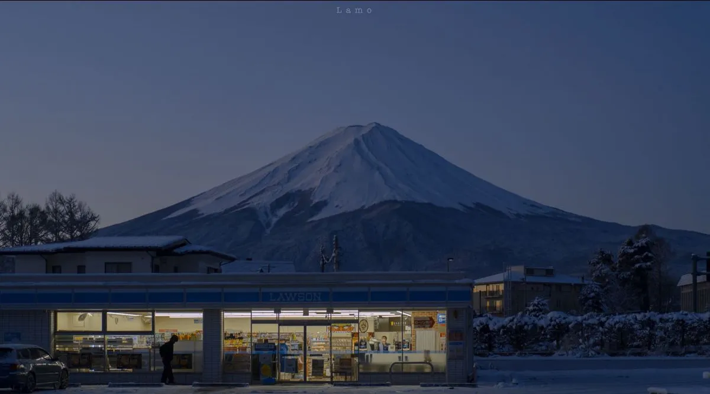

Introduction
Nature photography opens a window to the fascinating world of wildlife and natural landscapes. Capturing the intricate details of plants, animals, and scenic environments requires understanding the right equipment, such as cameras, lenses, and tripods, as well as techniques for lighting, focus, and composition.
Equally important is patience and observation. Learning to anticipate animal behavior, work with natural light, and respect the environment allows photographers to create images that are both striking and authentic, preserving the beauty of nature for others to appreciate.

"In every walk with nature one receives far more than he seeks."